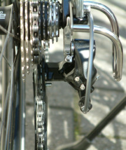

If you're into bikes and cycling, you've probably heard of a derailleur.

The term derailleur refers to an essential part of the gear shifting mechanism or gear drive. It's derived from the French word dérailleur. Do not confuse it with the French word derrière which means behind. Most bikes have a rear derailleur that shifts the chain up and down the cassette and a front derailleur to put the chain on the large chainrings.
Both derailleurs have several small adjustment screws to position the chain correctly and ensure that you can shift gears smoothly. If you know what these screws do, then adjusting the derailleur is very easy.